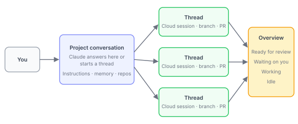

让 Claude 通过 Projects 协调持续进行的工作
在一个对话中为 Claude 提供一组相关工作，让它协调共享存储库、说明和内存的并行云会话。
Projects 目前在 Pro、Max 和 Ultra 计划上以公开测试版提供，并正在逐步推出。推出首先面向已使用过云端会话且在 claude.ai 聊天或 Cowork 中没有现有项目的账户。Projects 目前尚未在 Team 或 Enterprise 计划上提供。
如果您在 claude.ai/code 的侧边栏中或桌面应用的代码选项卡中没有看到 Projects，请在其中的 More 下查看。如果那里也没有，说明推出尚未覆盖到您的账户。您可以加入等待列表，并参阅并行运行 Agent，了解您在此期间可以使用的功能。
项目是一个持续进行的对话，Claude 在其中为您协调一系列相关工作。您告诉它需要做什么，它为每个任务启动一个线程。
每个线程通常是一个云会话：Claude Code 在云中运行，而不是在您的机器上运行。当任务需要只有您的计算机才有的东西时，您可以要求 Claude 通过远程控制在您的计算机上运行该线程。线程并行运行，您可以从手机上检查它们并引导它们。云线程在您关闭笔记本电脑后会继续进行，而您计算机上的线程仅在该计算机处于唤醒状态时运行。
没有项目的情况下，运行多个会话意味着您自己进行协调：您决定每个会话处理什么，在每个会话的开始重复相同的背景信息，并检查哪个已完成或需要您的回答。使用项目，您可以：
- 将工作发送到一个地方：每当出现问题时，将错误报告、堆栈跟踪或任务列表粘贴到对话中。Claude 为每项工作启动一个线程，或将其传递给已在该区域工作的线程，并就地回答快速问题。
- 设置一次上下文：每个新线程都以项目的说明开始，因此您陈述一次的规则（例如要针对哪个分支）会到达所有线程。
- 离开并返回查看完成的工作：当您一小时后或第二天早上回来时，Overview 窗格显示哪些线程已完成、哪些拉取请求已准备好供审查，以及哪个线程正在等待您的回答。
如果您已经知道希望项目运行的工作，请直接转到创建项目。
何时使用项目
当工作有一个超越单个会话的目标并不断产生任务时，创建项目是值得的。这些类型的工作非常适合项目：
- 跨多个代码库的一个目标："将每个服务升级到新的 lint 配置。"Claude 可以为每个代码库运行一个线程，每个都有自己的拉取请求，Overview 窗格显示哪些已准备好审查。
- 您不断提供的一个领域：一个服务的错误、堆栈跟踪和审查请求，当它们到达您时粘贴到对话中。您在一次修复后告诉 Claude 记住的陷阱在项目记忆中供下一次使用。
- 比一个会话更大的构建或迁移："构建
docs/spec.md描述的内容"或"将应用从已弃用的 ORM 迁移出去。"工作分成线程，每个处理一部分，您要求 Claude 记住的早期决定会到达后续线程，您在构建期间发现的规范更改和错误进入同一对话。 - 非代码工作：一个合同文件夹或支持工单导出，您不断回来提出新问题，例如"在这些工单中找到十个最常见的集成错误。"上传文档而不是添加代码库，线程将每个写作作为文件提交到项目的Library 标签页。
在任何情况下，您都可以发送一批任务，告诉 Claude 直接开始而无需您确认，然后离开。回来后，您可以在Waiting on you下找到需要您处理的线程。您还可以要求 Claude 将部分工作作为云端定时任务按计划运行。如果您属于其中一种情况，请创建项目。
何时其他方式更合适
项目仍然适用于仅某些任务需要您的机器的情况。Cloud 线程在 GitHub 代码库以及您上传到项目的文件、文件夹和 Google Drive 文件夹上工作，对于偶尔需要本地数据库或您计算机上的工具的任务，您可以要求 Claude 在您自己的计算机上运行该任务的线程。在这些情况下，项目以外的方式更合适：
- 一个适合在一个会话中完成的任务："修复不稳定的登录测试。"自己启动一个云会话。
- 每个任务都需要您的机器的工作：本地数据库、设备模拟器或 VPN 后面的 API。使用本地会话，或代理视图同时运行多个。如果工作只需要本地文件，请将它们上传到项目。
- 一个按时间表重复的任务，周围没有对话："每周一发布依赖报告。"单独创建一个云端定时任务。
- 多个人在 Slack 频道中给 Claude 工作并一起引导它：请参阅 Claude Tag。
项目使用与您其他 Claude Code 会话相同的计划限制，并更快地使用它们。使用和成本涵盖了什么使用您的计划以及如何降低成本。
项目如何组织
项目是一个与 Claude 的协调对话加上它启动的线程来完成工作。这些是它的部分：
- 项目对话：一个长期运行的会话，Claude 充当协调员。它接收您发送的内容，决定什么成为线程，并跟踪它启动的每个线程。它看到线程报告回来的内容，而不是它们采取的每一步。
- 线程：工作者。每个都是一个单独的会话，有自己的上下文窗口，完成一项工作并在完成时报告回对话。云线程在自己的分支上工作，当工作需要时打开拉取请求。
- 每个云线程开始时的内容：
- 项目的仓库和文件，加上其说明和记忆
- 项目每个仓库中的
CLAUDE.md，但不包括这些仓库的 skill、.claude/settings.json或.mcp.json - 您 claude.ai 账户上的连接器
- 一个云环境，设置其网络访问、环境变量、网络密钥和已安装的工具
- Overview 窗格：您在其中一次看到所有线程以及哪些需要您。其他标签页是 Library（用于您添加的文件和线程生成的文件）、Pull requests（用于线程打开的拉取请求）和 Scheduled tasks（用于项目中的定时工作）。
云线程不会从您自己机器上的 Claude Code 设置中获取任何内容。将 skills、plugins、连接器和工具放入线程涵盖了如何为它们提供它们可能缺少的内容。
以下是这些部分如何连接的方式，从您通过对话到执行工作的线程，Overview 跟踪它们的状态：

创建项目
您在 claude.ai/code、桌面应用的 Code 标签页或 Claude 移动应用中创建和使用项目，支持 iOS 和 Android。在浏览器和桌面应用中，有两种方式启动项目：
- 从头开始，当您知道希望 Claude 运行的工作流时：打开 New project 对话框并命名它。从头开始启动新项目会逐步讲解对话框。
- 从已经在进行工作的云端会话：在该会话的侧边栏菜单中选择 Continue in project，然后选择 Continue as new project。Claude 会根据会话正在做的事情提议项目的设置。请参阅从现有云端会话启动。
无论哪种方式，首先检查先决条件。
检查先决条件
在创建项目之前，检查您的计划、GitHub 设置以及工作需要到达的内容：
- 计划：您使用的是 Pro、Max 或 Ultra，并且 Projects 显示在您的侧边栏中（直接显示或位于 More 下）。选择 Projects 并检查它是否提供 New project 或 Get started。
- GitHub，如果项目将处理代码：您的代码在 github.com 上而不是 GitHub Enterprise Server、GitLab 或 Bitbucket 上，您连接的 GitHub 账户对其有推送访问权限，Claude GitHub App 已安装在其上。如果您使用
/web-setup连接了 GitHub，该令牌让您的其他云会话可以访问代码库，但对于项目线程来说还不够，项目线程需要 Claude GitHub App。设置 GitHub 访问有相关步骤。 - 网络访问、密钥和工具：对于云端线程，这些来自项目的云环境。默认环境已经可以访问常见的包注册表，因此仅在工作需要其他域、密钥或未预装的工具时检查此项。如果工作需要 MCP 服务器，检查它是否在您的 claude.ai 连接器中显示为已连接。
从头开始启动新项目
从头开始启动项目意味着打开 New project 对话框，命名工作流，并可选地为其提供目标以及它处理的代码库和文件。只有名称是必需的，因此您可以先创建项目，然后在工作进行时填入其余部分。
1. 打开 Projects
在 claude.ai/code 或桌面应用的 Code 标签页中，在左侧边栏中（或其中的 More 下）选择 Projects。在浏览器中，您也可以直接转到 claude.ai/code/projects/browse。然后选择 New project。如果按钮显示的是 Get started，请选择它，并先升级或归档其中列出的现有 claude.ai 项目。
2. 填写 New project 对话框
将项目范围限定为一个您将继续添加的工作流，例如保持一个 API 在其延迟目标下所需的一切。何时使用项目有更多示例。然后填写对话框的字段：
- Name：项目在 Projects 列表中的显示方式。
- Goal（可选）：您试图完成的一行内容，例如"将 p95 API 延迟保持在 200 毫秒以下"。对话中的 Claude 朝着它工作。没有目标的情况下，Claude 从您发送的任务工作，您可以稍后在 Project settings > General 中添加目标。
- Context（可选）：此项目处理的 GitHub 代码库，加上任何线程应该读取的文件、文件夹或 Google Drive 文件夹。为每个点击 Add。添加大多数任务需要的代码库而不是工作可能涉及的每一个；决定要添加哪些代码库涵盖了选择，您可以稍后在 Project settings > Environment 中添加更多。
关于线程应该如何工作的常规规则在项目说明中，您在项目存在后设置。
3. 创建项目
点击 Create project。项目的对话打开，底部有一个消息框，您可以在其中为 Claude 描述工作。
在您的第一个项目上，除非您先发送消息，否则 Claude 在项目创建后会自己进行一轮。该轮使用您的计划。在其中，Claude 可能会：
- 如果项目有它可以读取的仓库，启动一个线程来探索该仓库而不更改任何内容，并提议后续步骤。
- 发布从您最近的云端会话中提取的 Setup recommendations：要添加的仓库、要创建的定时任务和它可以启动的线程。每个推荐的仓库和定时任务都默认打开。关闭您不想要的，然后点击 Update setup 添加其余的，或忽略建议并自己描述工作。
项目现在在侧边栏的 Projects 下列出，其对话已打开。您的第一批涵盖了在您向其发送工作之前要设置的内容。
从现有会话启动
如果您自己启动的某个云端会话正在进行属于项目的工作，请打开其侧边栏菜单并选择 Continue in project，然后从子菜单中选择：
- 选择 Continue as new project 以从该会话创建新项目。项目会打开，Claude 读取会话并在项目对话中发布 Setup recommendations 供您确认。原始会话保留在您的会话列表中。如果它正处于某个轮次中间，它会继续运行，因此如果您不想两者同时工作，请自己停止它。
- 选择您现有的某个项目，将会话的工作带入该项目。该项目会打开，并以您的名义发送一条消息，要求 Claude 读取会话并从中断的地方继续。原始会话保留在您的会话列表中，保持不变。
云端会话的消息框上方也可能出现 Set up project 横幅。如果您使用它而不是 Continue as new project，结果是相同的，只是会话正在运行的轮次会在项目打开后停止。
您自己机器上的会话通过 Remote Control 连接后，在 claude.ai/code 也会获得相同的侧边栏菜单。如果某个会话是在您的账户开启了 Require trusted devices 时连接的，Claude 无法从项目中读取该会话的会话记录。如果该设置处于关闭状态：
- 如果会话尚未连接，请在其中运行
/remote-control。如果它是在该设置开启时连接的，请先断开连接，然后重新连接。 - 在浏览器中，在 claude.ai/code 的侧边栏中找到该会话所在的行，打开其菜单，然后从同一子菜单中选择。
如果 Require trusted devices 已开启，或者您不使用 Remote Control，请自己在项目对话中描述工作。或者推送该会话的分支，将其仓库添加到项目，并告诉 Claude 分支名称。
设置 GitHub 访问
大多数 GitHub 设置每次发生一次，而不是每个项目。您一次将 GitHub 账户连接到 Claude，Claude GitHub App 每个代码库安装一次，或如果您给它所有代码库，则为整个 GitHub 组织安装一次。当您添加 Claude GitHub App 还不覆盖的代码库或在强制 SSO 的 GitHub 组织中的代码库时，您会回到这些步骤。
1. 连接您的 GitHub 账户
如果您之前没有使用过 claude.ai/code，您的第一次访问会引导您连接 GitHub；请参阅连接 GitHub。否则使用GitHub 身份验证选项之一。
2. 在项目的代码库上安装 Claude GitHub App
安装 Claude GitHub App 并授予它项目将使用的代码库。在由 GitHub 组织拥有的代码库上，只有组织所有者可以完成安装；如果您不是，GitHub 会向所有者发送安装请求，项目在他们批准之前无法使用该代码库。
3. 为强制 SSO 的组织授权 SSO
如果 GitHub 组织强制 SAML SSO，重新连接 GitHub 并为该组织授权 Claude 应用。在您这样做之前，该组织的私有代码库不会出现在 New project 对话框或 Project settings > Environment 中。
当这些步骤之一不完整时，New project 对话框和项目页面会命名缺失的步骤并链接到您完成它的地方。在那里完成步骤，然后如果对话框提供，点击 Check again。如果代码库之后仍然缺失，请在 GitHub 上打开 Claude GitHub App 的安装，在 github.com/settings/installations 用于个人账户，并确认代码库在 Repository access 下列出。对于线程或项目在访问仍然错误时报告的错误消息，请参阅代码库访问错误。
在项目中工作
通过项目对话向 Claude 分配工作：一次一个任务或同时多个任务，加上随时出现的更新和零散想法。Claude 会路由每条消息，线程执行工作并报告结果。
你的第一批工作
在向新项目发送一批工作之前，请设置它，使第一批线程以你想要的方式返回：
- 编写项目说明：每个线程开始的简要说明，例如要针对哪个分支、线程如何检查其工作，以及什么需要你的批准。
- 发送一小段真实工作，或启动 Claude 建议的某个线程（如果它提供了任何建议），并在线程完成时打开它，查看它如何报告以及它在其分支上做了什么。如果它假设了错误的内容或无法到达所需的内容，线程猜测或停滞而不是询问涵盖了在哪里修复这个问题。
- 检查项目设置 > 常规中的线程模型和线程工作量。新项目在 Opus 上以高工作量运行每个线程，这会最快地消耗你的计划；选择模型并让 Claude 管理上下文涵盖了替代方案。
- 要求 Claude 在启动线程之前提议线程并一次运行几个，一旦几个线程以你想要的方式返回，就取消这些限制。
发送工作并读取结果
Claude 决定你在对话中发送的每条消息的去向：
- 快速问题通常会在对话中得到答案。
- 新工作会进入新线程或已在该区域工作的线程，Claude 会告诉你是哪一个。每个新线程在你的消息下显示为一张卡片：一个包含线程标题和状态的框，你点击它来打开线程。
- 一条消息中的多个不相关的任务会变成单独的线程。
如果 Claude 路由的方式与你想要的不同，请说出来。调整 Claude 如何运行项目列出了你可以告诉它的事情，例如为后续工作重用现有线程或就地回答而不是启动线程。
线程的完整结果保留在线程中，你打开对话中的其卡片来读取它们。线程生成的文件也在概览中的库选项卡上。
有时 Claude 会在建议的线程列表中提议线程而不是启动它们。点击建议上的箭头来启动该线程。当列出多个时，列表下的按钮会启动所有这些线程。
审查线程的拉取请求
当云线程更改代码时，除非你另外告诉它，否则它会执行以下操作：
- 分支：在新分支上工作，从存储库的默认分支开始。
- 拉取请求：当你要求时打开一个，并且可以为错误修复或其他具体更改自动打开一个。
- 打开后：使用自动修复打开的情况下监视拉取请求，无论你的其他云会话是否打开了自动修复。当 CI 失败时它会推送修复，处理审查评论，并在检查通过且拉取请求准备好供你使用时在线程中回复。
当线程推送了分支或打开了拉取请求时，其在对话中的卡片可以显示下一步的按钮：
- 解决冲突、修复 CI、处理评论和合并它将该指令作为来自你的消息发送给线程，因此你可以自己提示线程，而不是等待它对拉取请求做出反应。
- 审查 PR 在 GitHub 上打开拉取请求。
- 创建 PR 在空闲线程推送了分支但尚未打开拉取请求时出现。点击它会直接从该分支创建拉取请求，而不是向线程发送打开拉取请求的指令。
要更改线程何时打开拉取请求（例如仅在你要求时）或它们从哪个分支开始，请在任务中或在项目说明中说明。
在概览中查看需要你的内容
对话旁边的概览窗格跟踪项目的线程。当你第一次打开新项目时，它已经打开。项目标题中的概览按钮关闭并重新打开它，并在线程等待你时显示一个点。
在桌面应用中，当 Claude 在对话中发布、线程遇到错误或线程需要你的输入时，你还会收到桌面通知，因此你不必保持项目打开来了解情况。要在每次线程完成一轮时也获得一个通知，或为项目关闭通知，请在项目的侧边栏菜单中选择通知。这些通知仅限桌面：在浏览器中，检查概览按钮上的点。
窗格的线程选项卡按状态对线程进行分组：
| 组 | 其中的内容 |
|---|---|
| 准备审查 | 拉取请求打开并等待审查的线程 |
| 等待你 | 需要你的回复或批准的线程，或已失败的线程 |
| 工作中 | 仍在运行的线程 |
| 登陆 | 拉取请求已批准或排队合并的线程 |
| 空闲 | 已完成且不等待任何内容的线程 |
| 已解决 | 标记为完成的线程：由你从线程的菜单标记，由 Claude 在你采取最后一步（例如合并其拉取请求）后标记，或在一周无活动后自动标记。你可以从同一菜单重新打开一个 |
窗格的其他选项卡包括：
- 库：您添加的文件和文件夹，以及线程生成的文件
- Pull Request：在线程创建了 Pull Request 后显示
- 定时任务：Claude 从此项目设置的云端定时任务
当你需要控制时打开线程
点击对话中线程的卡片或概览中的其行来在概览窗格中打开其记录。从那里你可以：
- 逐步阅读 Claude 所做的事情。
- 通过在线程自己的消息框中写入来引导任务。那里的消息直接进入该线程，而项目对话中的后续消息仅在 Claude 将后续消息与该线程匹配时才到达它。
- 回答线程正在等待的权限提示。
- 使用停止中断线程，它在线程工作时替换发送按钮，或按 Esc。
选择模型并让 Claude 管理上下文
在项目设置 > 常规中设置模型和工作量。新项目在所有地方运行 Opus，线程的工作量为高，对话的工作量为低：
- 线程模型和线程工作量适用于线程。要为一个任务使用不同的模型，请在任务中要求它；对于已在运行的线程，使用该线程的模型选择器。
- 协调器模型和协调器工作量适用于项目对话中的 Claude。
你不在项目中管理上下文窗口。线程自动压缩，对话从最近的消息、最近的线程和项目内存而不是其完整历史记录工作，因此只要项目运行，它就会继续进行。将任何必须永远不被丢弃的内容放在项目内存中。如果一个线程超出其上下文，它会显示 Claude ran out of context on this turn。
调整 Claude 如何运行项目
在对话中告诉 Claude 一次运行多少个线程、何时发布更新以及何时打开拉取请求。如果 Claude 以你不想要的方式进行协调，请说出来。例如，你可以说：
- "提议线程并在启动之前等待我的批准"或"现在启动这些而不要求我确认"
- "一次最多运行两个线程"或"为同一区域中的后续工作重用现有线程"
- "发布更短的更新"或"仅在某些内容完成或被阻止时发布"
- "给我每个线程的状态更新"
- "用较小的模型执行此任务"
- "在我看到计划之前不要打开拉取请求"
- "告诉我这些存储库中有什么问题，暂时不要修复任何内容"，当你想在任何内容变成线程之前查看发现时
- "在这里回答，而不是启动线程"，当 Claude 为你打算作为快速问题的内容启动线程时
Claude 会自动将这些偏好保存到项目内存，并在后续线程中遵循它们。它们是 Claude 遵守的指令，而不是强制执行的设置，因此你以这种方式给出的线程限制不是硬上限。当你想要它精确措辞并从一开始应用于每个线程时，将其添加到项目说明中。
解除等待批准的线程
当线程的模型支持时，线程在自动模式中运行，因此大多数工具调用无需询问你即可运行。当线程需要你的批准时，提示在该线程内，线程等待你在那里回答。在项目对话中告诉 Claude 继续不会到达它。
每次批准仅涵盖该提示，或者如果您选择更广泛的选项，则涵盖该线程的其余部分。云端线程不会读取仓库 .claude/settings.json 中的权限规则，因此您需要依赖自动模式以及您在每个线程内给出的批准。
在你自己的计算机上运行线程
当任务需要只有你的计算机才有的东西，例如本地数据库、设备模拟器或 VPN 后面的 API 时，要求 Claude 在你的计算机上而不是在云中运行该任务的线程。当你在项目对话中要求时，线程是你机器上文件夹中的 Claude Code 会话，通过远程控制连接。项目的其他线程继续在云中运行。与云线程相比，在你的计算机上运行的线程：
- 使用该机器上的文件、工具、MCP 服务器和 Claude Code 设置，包括其 hooks 和权限规则，而不是项目的云环境
- 从项目的说明开始，但不加载其内存文件
- 仅在该计算机处于唤醒状态且远程控制打开时运行
1. 连接文件夹
在具有任务需要的文件夹的计算机上，通过以下两种方式之一通过远程控制使其可用。两者都需要该计算机上的 Claude Code v2.1.280 或更高版本。
- 在 Claude 桌面应用中：打开设置 > Code 或设置 > Claude Code，然后启用从您的手机和 claude.ai 使用此计算机。将文件夹添加到该开关下方的列表中。应用打开期间，线程可以在此计算机上运行。
- 在终端中：在文件夹中运行
claude remote-control并保持其运行。在 git 仓库中，添加--spawn worktree可为在那里运行的每个线程提供其自己的 worktree，而不是使用文件夹本身。
2. 使用本地工作提出任务
在项目对话中，从消息框旁边的 + 菜单中选择本地工作，这会为您的消息添加本地标记，然后写下您想要完成的内容。在消息中说明该任务应在您的计算机上运行也同样有效。
3. 在卡片上允许
Claude 会回复一张允许 Claude 在您设备上的文件夹中工作卡片。如果您连接了多个文件夹，请选择其中一个。两个线程同时在同一文件夹中工作可能会覆盖彼此的更改，因此如果该文件夹是 git 仓库，您可以在文件夹的选项中启用 Worktree，为此线程提供其自己的 worktree。然后点击允许一次。
线程在自动模式中运行，因此 Claude 在该文件夹中运行命令和编辑文件而不每次都询问你。如果自动模式在该计算机的 Claude Code 中不可用或已关闭，线程在没有它的情况下运行，它引发的任何权限提示都会在线程中等待你的答案，如解除等待批准的线程所述。
线程运行时，其标题中的笔记本电脑图标会显示您的计算机是否已连接。点击该图标可查看线程正在使用哪个文件夹，或关闭连接。当该计算机处于睡眠状态时，线程会暂停；如果桌面应用或 claude remote-control 退出，线程会停止。
- 要让线程重新运行：请参阅与您的文件夹失去联系
- 要防止计算机自动进入睡眠：在桌面应用中，在设置 > Code 或设置 > Claude Code 中启用为 Remote Control 保持此计算机唤醒
当需要受信任的设备对你的账户打开时，项目无法在你的计算机上运行线程。
给项目提供常规上下文
项目记忆、项目说明以及项目的仓库、文件和环境会跨线程携带上下文。每一项您只需设置一次。
| 上下文 | 它携带什么 | 您如何设置它 |
|---|---|---|
| 项目记忆 | Claude 关于项目的笔记，例如要求、决定和陷阱，存储为文件。每个云线程在启动时读取索引文件 MEMORY.md，并在需要时打开其他文件 |
在项目对话或任何云线程中要求 Claude 记住要求、决定或陷阱，或忘记一个。在 Project settings > Memory 中读取、编辑和删除文件 |
| 项目说明 | 发送到每个新线程和项目对话中 Claude 的文本，最多 16,000 个字符。编写项目说明涵盖了要放入其中的内容 | Project settings > Memory > Project instructions，或要求 Claude 更改说明 |
| 仓库、文件和环境 | 每个云线程克隆的仓库、它可以在 /mnt/project-files 下读取的文件夹和文件，以及它运行的云环境 |
仓库和环境在 Project settings > Environment 中设置，或在对话中要求 Claude 将仓库添加到项目。文件和文件夹通过 Overview 中 Library 标签页上的 Add 添加 |
Project settings > Memory 在 Auto memory 下列出这些文件，因为 Claude 在项目中工作时自己写入它们。它们与 Claude Code 在您机器上保留的自动记忆是分开的，即使两者都使用 MEMORY.md 索引。项目记忆也与项目仓库中的 CLAUDE.md 文件分开。每个云线程在启动时仍然从其克隆中读取那些 CLAUDE.md 文件，因此将关于仓库的说明放在其 CLAUDE.md 中，将关于项目的笔记放在项目记忆中。
编写项目说明
项目说明是每个新线程开始时的简报。点击项目标题中的齿轮图标打开 Project settings，然后转到 Memory > Project instructions。有用的简报涵盖：
- 项目的目的
- 工作发生的地方：哪些仓库、从哪个分支开始、如何命名 Pull Request
- 线程在宣布完成之前如何检查自己的工作
- 当它需要的东西缺失时该做什么
- 什么需要先获得您的批准
例如：
This project holds p95 latency for the payments API under 200 ms: profiling, query and caching fixes, and the dependency upgrades that come with them, in the payments-api repository.
- Branch from main and open one draft pull request per thread.
- Before you call work done, run `make test` and `make lint` and paste the summary lines in your final message.
- If you can't reach something you need, such as a repository, a secret, an API, or a connector, say exactly what's missing in your first message and stop. Don't substitute, mock, or guess.
- Don't merge, force-push, or change CI configuration without asking me in the thread.
关于某个仓库的规则，例如其构建命令，应放在该仓库的 CLAUDE.md 中；当该仓库属于项目时，每个云线程都会读取它。工作开始后，当您纠正某个线程时，也告诉 Claude 记住这个纠正：它会进入项目记忆，之后的云线程启动时就会带有它。
决定要添加哪些仓库
您添加到项目的仓库会连同其代码和 CLAUDE.md 出现在每个云线程中，但不包括其 skill、.claude/settings.json 或 .mcp.json。您未添加的仓库仍在可及范围内：当任务需要时，云线程可以将其添加到自身。大多数项目两者兼用：
- 将其添加到项目，可在 New project 对话框中、Project settings > Environment 中，或在对话中要求 Claude 将其添加到项目。从那时起，每个云线程都会克隆它，并在启动时加载其
CLAUDE.md，无论任务是否涉及它。 - 不添加，让线程在需要时自行添加。 如果云线程的任务需要项目中没有的仓库，它可以将其添加到自身，线程中会有一条说明，表明该仓库仅被添加到此线程。克隆发生在任务中途，因此线程启动时该仓库的
CLAUDE.md并不存在。下一个线程启动时不会有它。以这种方式添加的仓库需要与项目仓库相同的前提条件：在其上安装 Claude GitHub App，并且您的 GitHub 账户具有推送权限。
项目完全可以不包含仓库。其云线程仍然可以进行研究、编写文档，以及在自己的沙箱中编写和运行代码，并将文件交付到 Library 标签页。当任务需要时，它的任何云线程仍然可以将仓库添加到自身。
一旦项目有了仓库，无论是将仓库添加到项目还是线程将仓库添加到自身，Claude 都只能添加项目已使用的 GitHub 所有者下的仓库。要引入来自不同所有者的仓库，请自己在 Project settings > Environment 中将其添加到项目。
对于跨越许多仓库的项目，例如一个包含服务器、Web、移动和桌面代码的功能，请添加几乎每个任务都会涉及的一两个仓库，并在项目说明中列出其他仓库，以便 Claude 知道其余代码在哪里。这样云线程启动时规模较小，仅在需要时为相应任务拉入其他仓库。
添加文件和文件夹
在 New project 对话框的 Context 字段中添加您希望线程读取的文件和文件夹，或之后使用 Overview 中 Library 标签页上的 Add。以下限制适用于您添加的内容：
- Library 标签页：一次选择最多 100 个文件和 2 GB，单个文件最多 480 MB。
- New project 对话框：超过 30 MB 的文件会被跳过，因此请在创建项目后从 Library 标签页添加较大的文件。
- 文件夹：当您从任一位置添加文件夹时，项目会收到其前 100 个文件的副本，最多 200 MB，不包括任何超过 30 MB 的文件、隐藏文件或
node_modules。一个项目最多可容纳 10 个文件夹和 Google Drive 文件夹（合计），单个文件不计入该限制。 - 上传后的更改：上传的是副本，因此您之后在计算机上所做的更改不会同步到项目，直到您再次上传该文件并在询问现有名称时选择 Replace。
线程从您的仓库中获取什么
无论项目有一个仓库还是多个仓库，云线程都会加载每个仓库的 CLAUDE.md 说明，但不会加载其 skill、.mcp.json 服务器或 .claude/settings.json。
| 在每个仓库中 | 在云线程中 |
|---|---|
仓库根目录下的 CLAUDE.md、.claude/CLAUDE.md 和 .claude/rules/ |
在线程启动时从每个仓库加载。子目录中的 CLAUDE.md 文件和特定路径规则不会加载 |
.claude/skills/ 下的 skill |
不加载。请改为为您的 claude.ai 账户启用该 skill，如将 skill、插件、连接器和工具引入线程所述 |
.claude/ 下的 Agent 和命令 |
不加载。要使用它们，请在您自己的计算机上运行线程 |
.mcp.json 中的 MCP 服务器 |
不加载。请改为使用您 claude.ai 账户上的连接器，如将 skill、插件、连接器和工具引入线程所述 |
在 .claude/settings.json 中启用的插件 |
不加载。请改为在 Project settings > Plugins 中添加该插件 |
.claude/settings.json 中的权限规则 |
不适用。请在线程内批准工具调用，如解除等待批准的线程的阻塞所述，或在您自己的计算机上运行线程 |
.claude/settings.json 中的 hook |
不运行。要使用您的 hook，请在您自己的计算机上运行线程 |
.claude/settings.json 中的 env |
不适用。请在云环境中设置环境变量 |
为线程选择环境
每个新云线程都在项目的云环境中启动。环境决定线程可以访问哪些域、它们拥有哪些环境变量、哪些网络密钥会被添加到它们的请求中，以及设置脚本在 Claude 启动之前安装什么。在您于 Project settings > Environment 中选择环境之前，云线程使用默认的 Anthropic 托管环境。
如果云线程需要访问内部 API 或私有包注册表，或需要您的机器通常持有的令牌，请更改环境而不是项目：请参阅网络访问、添加网络密钥和设置脚本。
将 skill、插件、连接器和工具引入线程
云线程不具备仅安装在您机器上的 skill、MCP 服务器、插件和工具。Claude 通过 Remote Control 在您机器上运行的线程会使用那里安装的内容。要让这些内容对云线程可用：
- skill：为您的 claude.ai 账户启用它们，云线程会加载您在那里启用的 skill，但自托管环境中的某些线程除外。提交到仓库
.claude/skills/中的 skill 不会在云线程中加载。 - 插件：在 Project settings > Plugins 中添加它们；它们会加载到每个新云线程中。仓库在其
.claude/settings.json中声明的插件不会在云线程中加载。 - MCP 服务器：云线程从您 claude.ai 账户上的连接器获取 MCP 工具，这些连接器是您在 claude.ai/customize/connectors 一次性连接的 MCP 服务器。每个云线程都可以使用所有这些连接器，无需按项目设置。项目对话本身没有连接器，因此请将需要连接器的工作作为任务发送给云线程。连接器如何到达 Claude Code 列出了云端会话的规则以及关闭连接器的设置。
- 命令行工具和包：在环境的设置脚本中安装它们。
要在 claude.ai/code 查看正在运行的云线程拥有哪些连接器，请打开该线程，并从其消息框旁的 + 菜单中选择 Connectors。在那里关闭某个连接器会将其从该线程中移除，并将此保存为您的账户默认值，因此在您重新打开它之前，新线程和 claude.ai 聊天启动时都不会带有它。在您向云线程发送下一条消息后，它才会获取您新添加或重新连接的连接器。
项目设置参考
您在 claude.ai/code 或桌面应用中更改项目设置，而不是在 settings.json 中。从项目侧边栏菜单中的 Settings 或项目标题中的齿轮图标打开 Project settings。
设置在您更改时保存；您正在编辑的文本字段，例如目标或说明，显示 Save changes 和 Discard，直到您离开它。对说明、代码库、plugins 和 Project settings 中的环境的更改到达新线程，而不是已经运行的线程。
| 设置 | 部分 | 它控制什么 |
|---|---|---|
| 名称、图标和目标 | General | 侧边栏中项目的名称和图标，以及其一行目标 |
| Coordinator model 和 effort | General | 项目对话中 Claude 的模型和努力级别 |
| Thread model 和 effort | General | 线程的模型和努力级别 |
| 项目说明 | Memory | 常规规则每个新线程接收 |
| 项目代码库 | Environment | 新线程克隆的代码库 |
| 云环境 | Environment | 新线程运行的云环境 |
| Plugins | Plugins | 加载到每个新线程的 plugins |
| Usage | Usage | 按线程和按模型的令牌使用 |
| Memory | Memory | 项目的记忆文件 |
| Restart Claude | General | 当Claude 在那里停止响应时重启项目对话 |
| Pause、Archive、Delete | General | 停止、隐藏或删除项目；请参阅暂停、存档或删除项目 |
暂停、存档或删除项目
所有三个控件都在 Project settings > General 的底部：
- Pause：一次停止所有东西。每个运行的线程和对话都被中断，没有新线程启动，定时任务不运行，项目不接受消息，直到您恢复它。点击同一地方或项目消息框上方的横幅中的 Resume；暂停的线程在您之后向其发送消息时继续。
- Archive：从侧边栏隐藏项目并存档其线程，这会停止任何正在运行或监视 Pull Request 的线程。项目中的定时任务在其存档期间不运行。要恢复项目，请从 Projects 页面打开它并点击 Unarchive。其线程保持存档，直到您从会话列表中单独取消存档它们。
- Delete：永久删除项目及其线程、其记忆和其文件，并关闭项目的定时任务。这无法撤销。线程推送到 GitHub 的分支和 Pull Request 不受影响。
使用和成本
项目使用计入与您其他 Claude Code 会话相同的计划限制，项目本身无法超过这些限制。
达到您计划限制的线程等待并在限制重置时自己继续，因此您留下运行的工作在您的下一个使用窗口中开始使用，无需来自您的消息。线程达到使用限制涵盖了您看到的内容、如何停止它，以及不等待的一种情况。
工作仅在您为您的账户打开使用信用时才超过您的计划限制。线程无法为您打开它们。
什么使用您的计划
项目比单个会话更快地使用您的限制，特别是在 Pro 计划上，您应该期望在运行一个的日子里更快地达到您的限制。项目的这些部分使用您的计划：
- 运行线程：每个都是一个完整的会话，多个可以同时运行。没有固定数字；Claude 启动工作需要的尽可能多，您要求的限制是偏好而不是上限。强制限制是每天跨您的项目 500 个新线程。
- 对话：Claude 使用自己的令牌读取线程报告的内容并决定下一步做什么。
- 线程监视拉取请求：当 CI 失败或审查评论到达其拉取请求时，空闲线程唤醒并再次使用您的计划。要停止这个，请在线程中要求它停止监视拉取请求。
没有运行线程、没有监视拉取请求和没有新消息的项目在闲置时不使用您的计划，存档的项目也不使用。
查看和减少项目的使用
在 Project settings 中打开 Usage 以按线程和按模型查看令牌使用，以及有多少进入项目对话。要降低它：
- 在 Pro、Max 和 Ultra 计划限制内，缓存生命周期为一小时。闲置时间超过该时长的线程在收到后续消息时，会先重新读取其整个对话，然后再执行任何操作。对于新工作，请要求 Claude 启动一个新线程，这可能比恢复一个大型旧线程使用得更少。
- 对于不需要最大模型的工作，为线程、对话或两者选择更小的模型或更低的努力级别。
- 在项目对话中要求 Claude 一次运行更少的线程，或自己回答小问题而不是启动线程。
项目与其他 Claude Code 功能的关系
几个 Claude Code 功能让多个会话同时工作，因此并行运行工作本身不是项目的目的。在项目中，Claude 启动和跟踪会话而不是您，每个都从相同的说明开始。这是每个相邻功能如何连接到项目的方式：
- Claude Tag：Claude Tag 是您团队 Slack 频道中的 Claude，在 Team 和 Enterprise 计划上提供。频道中的任何人都可以给它分配工作，频道中的每个人都能看到并引导它，它使用管理员为该频道设置的连接。
项目在 Pro、Max 和 Ultra 上提供。项目仅属于您一人：您是唯一给它分配工作或看到其线程的人，它使用您自己的 GitHub 访问权限和连接器。Claude Tag 与 Cowork 和 Claude Code 的不同之处有并排比较。
* 云端会话：每个线程都是一个云端会话，除非您要求 Claude 在您的机器上运行它。无论哪种方式，Claude 启动和跟踪它而不是您。您还可以将自己启动的云端会话的工作带入项目：在该会话的侧边栏菜单中选择 Continue in project。
* 定时任务：当您在项目中请求定时工作时，Claude 会创建一个云端定时任务，它作为该项目中的线程运行，并显示在项目的 Scheduled tasks 标签页上。您在项目之外创建的定时任务会继续独立运行。
* Remote Control：Remote Control 连接 claude.ai 到在您的机器上运行的 Claude Code 会话。当您在项目中要求 Claude 在您的计算机上运行线程时，项目使用 Remote Control 来执行。
* 本地会话和 Agent 视图：您自己在终端、IDE 或桌面应用的本地环境中启动的会话不属于您的项目，但您可以将其工作带入某个项目。Agent 视图是用于并排跟踪多个本地会话的屏幕，您仍然需要自己启动每个会话并为其分配任务。
* Worktrees：一个 worktree 为每个本地会话提供其自己的仓库工作副本。云线程不需要它们：每个线程将其仓库克隆到其自己的云沙箱中，并在其自己的分支上工作。
* 代理团队：一个代理团队是一个会话，为单个任务启动队友会话，在您的机器上或在云会话内，并以该任务结束。
* Subagents：一个subagent在一个会话内运行，在其自己的上下文窗口中执行一个辅助任务，并向该会话返回摘要。项目的线程是 Claude 启动的整个会话，向项目对话报告，一个线程仍然可以为其自己的辅助任务使用 subagents。
* claude.ai 聊天和 Cowork 中的 Projects：早期的 Projects 体验，对对话和参考文件进行分组，没有线程或协调员。这些项目继续按照今天的方式工作，直到重新设计的体验到达它们。
并行运行代理并排比较这些选项。
限制
- Projects 在 claude.ai/code、桌面应用和 Claude 移动应用中可用，不在终端 CLI、VS Code 扩展或 JetBrains 插件中，也不通过 Amazon Bedrock、Google Cloud 的 Agent Platform 或 Microsoft Foundry。
- 项目线程是云会话，或通过远程控制在您自己的机器上的会话，两种情况下 Anthropic 都是模型提供者。安全和数据使用涵盖了云会话如何隔离以及保留什么，连接和安全涵盖了您机器上的线程如何连接以及存储什么。
- 您不能将自己在机器上启动的会话添加到项目中，但可以将其工作带入项目。项目通过在您自己的计算机上通过 Remote Control 运行线程到达您的机器，该部分列出了它需要什么。
- 云线程的沙箱在轮之间暂停，并在线程继续时恢复。如果沙箱无法恢复，线程从新克隆继续，因此未提交的更改可能会丢失。在长任务上，要求 Claude 提交和推送进行中的工作。
- 项目属于一个用户。您不能与另一个用户共享项目或其线程，线程记录没有其他云会话具有的共享选项。在测试版期间没有项目的组织级控制。
- 线程属于启动它的一个项目。您不能将线程移动或复制到另一个项目，或将其移出以独立存在。Continue in project仅以另一种方式进行：它将云端会话的工作带入项目。您不能将两个项目合并为一个。
故障排除
对于 New project 对话框中的 GitHub 设置提示，请参阅设置 GitHub 访问。
线程看起来卡住了
Claude 不发布线程采取的每一步，因此显示为运行且项目对话中没有新消息的线程通常仍在工作。新云线程也在 Claude 开始之前配置其云环境，因此其第一次更新需要一会儿。打开线程读取其记录。如果线程等待权限提示，请在那里回答。
线程猜测或停滞而不是询问
当多个线程回来时假设了错误的东西、解决了缺失的访问或停止了"被阻止"，原因通常是项目设置中的相同间隙，而不是每个任务的问题。在修复任何东西之前排序哪些线程是合理的：
- 在对话中要求 Claude："对于每个打开的线程，列出您要求它做什么、它假设或无法到达什么，以及它在等待什么。"Claude 读取每个线程并在对话中回答。
- 对于从错误假设开始的线程，从 Overview 打开线程并从其菜单标记为已解决，或在其消息框中告诉它做什么。其分支和任何拉取请求保留在 GitHub 上，直到您删除它们。
- 一次修复间隙，在项目说明或环境中，然后在再次发送其余工作作为新线程之前发送一个线程。
Claude 没有响应
当 Claude 运行但其回复没有到达项目时，项目对话显示"Claude hasn't responded"横幅。点击横幅上的 Restart Claude，或转到 Project settings > General 并在 Restart Claude 行中点击 Restart。Claude 重新连接到对话；它正在写的任何回复都丢失了，线程不受影响。
代码库访问错误
三条消息意味着线程或项目无法到达其代码库之一。项目的云线程需要GitHub 先决条件，即使您的其他云会话无故障地克隆相同的代码库。
- "Couldn't start the session — Claude doesn't have GitHub access to this project's repository"，在线程启动之前报告，当 Claude GitHub App 未安装在该代码库上、已暂停或未链接到您连接的 GitHub 账户时。
- "Unable to access your repository"，由线程报告，当其克隆失败时：GitHub 拒绝了克隆、在项目拥有的名称下找不到代码库，或线程被要求启动的分支不存在。
- "Claude can't access" 一个代码库，在您在 New project 对话框或 Project settings 中保存代码库时显示。消息继续带有安装链接和重新连接链接。如果 Claude GitHub App 不在该代码库上，使用安装链接，如果它在，使用重新连接链接，因为 GitHub App 可以在 GitHub 上安装而不链接到您连接到 Claude 的账户。如果消息说 GitHub App 已暂停或不包括此代码库，请按照其链接到 GitHub 修复。
要修复任何一个，点击消息提供的按钮，例如 Install GitHub App 或 Select repositories on GitHub，然后 Check again。当受阻的原因在 GitHub 组织一侧时，例如尚未批准应用的所有者或排除 Claude 的 IP 允许列表，消息改为显示 See how to fix 链接。如果没有按钮，请按照设置 GitHub 访问，然后发送另一条消息重试。
线程达到使用限制
当线程或项目对话达到您套餐的五小时或每周限制时，它会自动持续重试，并在限制重置后继续。由定时任务启动的线程不会等待：其轮次会因限制错误而停止，您需要在限制重置后向其发送消息。
线程等待期间，会显示 Service is busy 以及"Claude is still retrying and will continue automatically."。您无需执行任何操作，工作即可继续。如果您不希望它占用您的下一个用量窗口，请点击线程中的 Stop，或暂停项目以暂停所有线程。用量限制错误解释了这些限制及其重置时间。
需要额外的使用信用
线程或项目对话发出了您的计划仅用使用信用覆盖的请求，例如对您的计划不包括的模型或上下文大小的请求，并且使用信用未为您的账户打开。将使用信用添加到您的订阅涵盖了谁可以在每个计划上打开或购买它们。一旦信用可用，发送另一条消息重试。
与您的文件夹失去联系
在您的计算机上运行的线程在该处的 Claude Code 会话停止响应时显示此消息，通常是因为计算机进入睡眠状态，或桌面应用或 claude remote-control 退出。唤醒计算机。如果桌面应用或 claude remote-control 不再在那里运行，请重新启动它：
- 桌面应用：重新打开应用，并确认 Settings > Code 或 Settings > Claude Code 下的 Use this computer from your phone and claude.ai 仍处于打开状态
- 终端：在同一文件夹中再次运行
claude remote-control
其他消息
这些消息命名它们自己的原因。表格为每个提供下一步。
| 消息 | 要做什么 |
|---|---|
| "Unable to connect to repository"，带有"Claude couldn't reach GitHub to fetch your repository" | 等一会儿，然后发送另一条消息重试 |
| "Unable to connect to repository"，带有"Claude couldn't access your repository or environment" | 您的 GitHub 账户需要对代码库的推送访问，环境必须仍然存在。在 Project settings > Environment 中检查两者，然后重试 |
| "Couldn't show the setup proposal" | 您打开的应用比 Claude 发送的 Setup recommendations 更旧。刷新页面或重启桌面应用，或要求 Claude 再次提议设置 |
| "The project's environment was removed" | 在 Project settings > Environment 中选择不同的环境；更改适用于新线程 |
| "Setup script failed" | 点击错误上的 Edit setup script，在环境中修复脚本，然后发送另一条消息。设置脚本失败列出常见原因 |
| "Claude ran out of context on this turn" | 线程填满了其上下文窗口。如果消息说线程在新会话中继续，它自己继续；否则在项目对话中要求 Claude 为剩余工作启动新线程 |
| "Couldn't start in" 后跟您的文件夹名称 | 您允许线程在您的计算机上运行，但会话无法在那里启动。当消息下的一行给出原因时，修复它，然后要求 Claude 再次运行任务 |
| "Claude is out of date on your device" | 您选择运行线程的计算机具有比 v2.1.280 更旧的 Claude Code 版本。在那里更新 Claude Code，或如果这是连接文件夹的内容，则更新桌面应用，然后要求 Claude 再次运行任务 |
| "Reached the turn limit" | 线程达到了 CLAUDE_CODE_MAX_TURNS 设置的代理轮次上限。发送另一条消息继续，或在设置它的地方提高或删除该变量 |
相关资源
- 在云中使用 Claude Code：每个云线程背后的云会话如何工作，包括 GitHub 访问选项和拉取请求上的自动修复
- 配置云环境：更改云线程可以在网络上到达什么，为它们提供环境变量和网络密钥，并使用设置脚本安装工具
- 使用定时任务自动化工作：定时任务的时间表、触发器和管理，包括 Claude 从项目创建的那些
- 使用代理视图管理多个代理：当工作需要仅您的机器可以到达的工具或服务时，在您自己的机器上运行和跟踪多个会话
- Projects redesigned: from folder to conversation：发布公告，带有使项目成为与 Claude 对话的思考